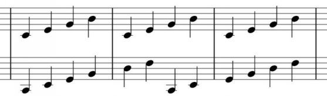

A polymeter is similar to a polyrhythm in that it amounts to two distinct rhythmic figures occurring at one time. But in this case, rather than two different rhythms (two different time signatures, if you want to think of it that way) occurring simultaneously and taking up the same amount of time, now there are two meters – two different amounts of time taken up – being played at the same time so that the pulse of one is identical to the pulse of the other.
In other words, there may be a four note series (think: 4/4) at 120 bpm that repeats after those four notes while a five note series (think: 5/4) also at 120 bpm sounds. The five note series also repeats when it finishes, which means that the five note series begins again a full beat after the four note series begins again. These distinct meters, while rhythmically the same, will cycle at different rates. This is sometimes not notated in any particular way – there is simply one series of notes that repeats at odd intervals across some number of bars, while the other series repeats evenly.
Here’s an example:

Figure 6.8. Polymeter example
The idea here is that the top note line repeats every 4 notes (every bar) whereas the bottom one repeats every six notes (every one and a half bars). One way to think about this is to see it as two different meters -- one 4/4 and one 6/4 -- happening at the same time.
Advanced rhythm concepts such as these will be a subject of a separate book; for now it is enough that you are aware of them and have an idea of what they are.